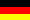

Der Europäische CW Dachverband
The European CW Association
c/o ECM der AGCW-DL
 English
English
 Esperanto
Esperanto
 Français
Français
 Italiano
Italiano
 Castellano (qsy a EACW)
Castellano (qsy a EACW)
 Svenska
Svenska
|
Die EUCW ist ein Dachverband europäischer Telegrafieklubs. Ziel der Organisation ist der Informationsaustausch zwischen den Mitgliedsvereinen sowie die Förderung der Morsetelegrafie im Amateurfunk im Allgemeinen. Mitglieder der EUCW sind nicht Einzelpersonen, sondern europäische Telegrafieorganisationen, d.h. reine CW Klubs und auch QRP-Klubs, die von ihrer Natur her auch immer CW einen höchsten Stellenwert einräumen. Auch nicht europäische Organisationen können mit der EUCW assoziiert sein. Jeder Mitgliedsverein benennt eine Kontaktperson (ECM = EUCW Communications Manager) zur Kommunikation mit der EUCW. ECM der AGCW ist derzeitig Martin, ik2rmz mit freundlicher Unterstützung durch Tom (hb9dod at agcw . de, Koordination für ON/PA) und Micha, df4wx (Layout dieser Seite).
|
Die AGCW-DL e.V. (kurz AGCW) ist einer der wichtigsten deutschen Telegrafieclubs. Er wurde 1971 gegründet und vertritt etwa 2000 Mitglieder aus Deutschland und anderen Ländern. Die AGCW fördert im Rahmen ihrer Zusammenarbeit mit dem DARC (Deutscher Amateur-Radio-Club) die Belange der Telegrafie. Besonders hat sich die AGCW der Jugendarbeit verschrieben. Daneben tritt die AGCW als Veranstalter von Telegrafiewettbewerben auf.
|
| Offizielle Sprache der EUCW ist Englisch, von daher sind
grundsätzlich alle Informationen erst einmal nur auf Englisch
verfügbar. Bitte habt Verständnis dafür, dass auf den EUCW Seiten
der AGCW (noch) nicht alles auf Deutsch übersetzt worden ist. Wer
Lust hat, beim Übersetzen etwas zu helfen, möge sich bitte bei mir
melden.
Stand: siehe hier. 73 de IK2RMZ AGCW 897 |
 |